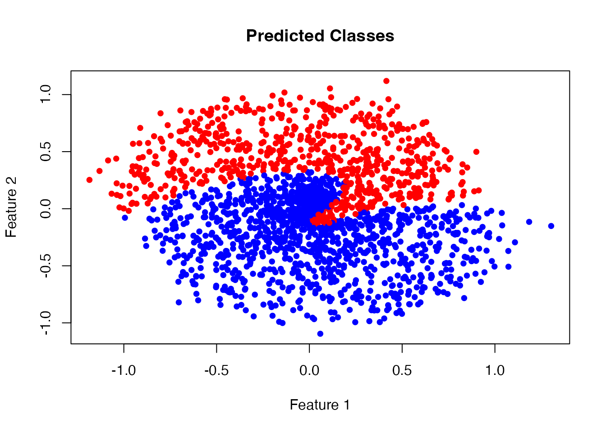

This vignette demonstrates how to build and train neural networks using Rmlx’s neural network layers and automatic differentiation capabilities.
Building a Neural Network
Rmlx provides modular neural network components that can be combined
using mlx_sequential(). Here’s a simple multi-layer
perceptron (MLP) for binary classification:
library(Rmlx)
#>
#> Attaching package: 'Rmlx'
#> The following object is masked from 'package:stats':
#>
#> fft
#> The following objects are masked from 'package:base':
#>
#> asplit, backsolve, chol2inv, col, colMeans, colSums, diag, drop,
#> outer, row, rowMeans, rowSums, svd
# Create a 3-layer MLP
mlp <- mlx_sequential(
mlx_linear(2, 32), # Input: 2 features
mlx_relu(),
mlx_dropout(p = 0.2),
mlx_linear(32, 16),
mlx_relu(),
mlx_linear(16, 1), # Output: 1 logit
mlx_sigmoid() # Probability output
)Generating Training Data
Let’s create a simple binary classification dataset:
set.seed(42)
# Generate spiral dataset
n_samples <- 2000
noise <- 0.1
# Class 0: first spiral starting at angle 0
theta0 <- runif(n_samples/2, 0, 4*pi)
r0 <- theta0 / (4*pi) + rnorm(n_samples/2, 0, noise)
x0 <- cbind(r0 * cos(theta0), r0 * sin(theta0))
y0 <- rep(0, n_samples/2)
# Class 1: second spiral starting at angle pi (interleaved)
theta1 <- runif(n_samples/2, 0, 4*pi)
r1 <- theta1 / (4*pi) + rnorm(n_samples/2, 0, noise)
x1 <- cbind(r1 * cos(theta1 + pi), r1 * sin(theta1 + pi))
y1 <- rep(1, n_samples/2)
# Combine
x_train <- rbind(x0, x1)
y_train <- c(y0, y1)
# Convert to MLX tensors
x_mlx <- as_mlx(x_train)
y_mlx <- as_mlx(matrix(y_train, ncol = 1))
# Visualize the training data
plot(x_train[, 1], x_train[, 2],
col = ifelse(y_train == 0, "blue", "red"),
pch = 19, cex = 0.8,
main = "Training Data",
xlab = "Feature 1", ylab = "Feature 2")
Training Loop
Define a loss function and train using gradient descent:
# Loss function operating on the module
loss_fn <- function(module, x, y) {
preds <- mlx_forward(module, x)
mlx_binary_cross_entropy(preds, y)
}
# Training parameters
learning_rate <- 0.05
n_epochs <- 600
# Optimizer and training mode
optimizer <- mlx_optimizer_sgd(mlx_parameters(mlp), lr = learning_rate)
mlx_set_training(mlp, TRUE)
for (epoch in seq_len(n_epochs)) {
step <- mlx_train_step(mlp, loss_fn, optimizer, x_mlx, y_mlx)
if (epoch %% 100 == 0) {
loss_value <- as.numeric(as.matrix(step$loss))
cat(sprintf("Epoch %d, Loss: %.4f\n", epoch, loss_value))
}
}
#> Epoch 100, Loss: 0.6695
#> Epoch 200, Loss: 0.6613
#> Epoch 300, Loss: 0.6625
#> Epoch 400, Loss: 0.6569
#> Epoch 500, Loss: 0.6599
#> Epoch 600, Loss: 0.6533
mlx_set_training(mlp, FALSE)Evaluating Model Performance
Let’s evaluate the model’s predictions:
# Make predictions on all training points
predictions <- mlx_forward(mlp, x_mlx)
pred_probs <- as.matrix(predictions)
pred_classes <- ifelse(pred_probs > 0.5, 1, 0)
# Confusion matrix
confusion <- table(Actual = y_train, Predicted = pred_classes)
print(confusion)
#> Predicted
#> Actual 0 1
#> 0 771 229
#> 1 541 459
# Calculate accuracy
accuracy <- sum(diag(confusion)) / sum(confusion)
cat(sprintf("\nAccuracy: %.2f%%\n", accuracy * 100))
#>
#> Accuracy: 61.50%
# Plot predicted classes
plot(x_train[, 1], x_train[, 2],
col = ifelse(pred_classes == 0, "blue", "red"),
pch = 19, cex = 0.8,
main = "Predicted Classes",
xlab = "Feature 1", ylab = "Feature 2")
Using Different Architectures
Rmlx provides various layer types for different architectures:
Convolutional Features
While full convolution layers require C++ implementation, you can combine linear layers with reshape operations:
# Classifier with normalization
classifier <- mlx_sequential(
mlx_linear(10, 64),
mlx_layer_norm(64),
mlx_relu(),
mlx_dropout(p = 0.5),
mlx_linear(64, 32),
mlx_batch_norm(32),
mlx_relu(),
mlx_linear(32, 3),
mlx_softmax_layer() # Multi-class output
)Embeddings for Categorical Data
Use mlx_embedding() for categorical inputs:
# Text/token embeddings
vocab_size <- 10000
embed_dim <- 128
embedding_net <- mlx_sequential(
mlx_embedding(vocab_size, embed_dim),
mlx_linear(embed_dim, 64),
mlx_relu(),
mlx_linear(64, 1)
)
# Input: token indices (0-indexed)
tokens <- as_mlx(c(42, 17, 99))
output <- mlx_forward(embedding_net, tokens)Available Loss Functions
Rmlx implements common loss functions:
-
mlx_mse_loss(): Mean squared error (regression) -
mlx_l1_loss(): Mean absolute error (robust regression) -
mlx_binary_cross_entropy(): Binary classification -
mlx_cross_entropy(): Multi-class classification
Each supports reduction = "mean", "sum", or
"none".
Available Activation Functions
-
mlx_relu(): Rectified Linear Unit -
mlx_gelu(): Gaussian Error Linear Unit -
mlx_sigmoid(): Logistic sigmoid -
mlx_tanh(): Hyperbolic tangent -
mlx_silu(): Sigmoid Linear Unit (Swish) -
mlx_leaky_relu(): Leaky ReLU with configurable slope -
mlx_softmax_layer(): Softmax normalization
Regularization and Normalization
-
mlx_dropout(): Dropout regularization -
mlx_layer_norm(): Layer normalization -
mlx_batch_norm(): Batch normalization
Remember to set training mode appropriately:
model <- mlx_sequential(
mlx_linear(2, 4),
mlx_dropout(0.5)
)
# Training
mlx_set_training(model, TRUE)
# Evaluation
mlx_set_training(model, FALSE)Best Practices
-
Always evaluate: Call
mlx_eval()after parameter updates to trigger computation - Training mode: Set models to training mode during training, evaluation mode during inference
-
Gradient computation: Use
argnumsinmlx_grad()to specify which arguments to differentiate - Device management: Ensure all tensors are on the same device (GPU/CPU)
Further Reading
- See
vignette("linear-regression")for a simpler optimization example - Check
?mlx_gradfor automatic differentiation details - Refer to the MLX Python documentation for more advanced patterns